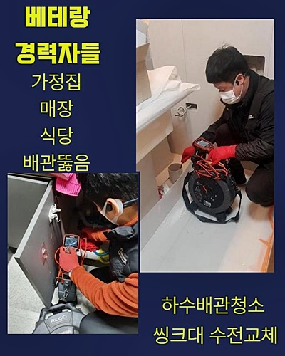
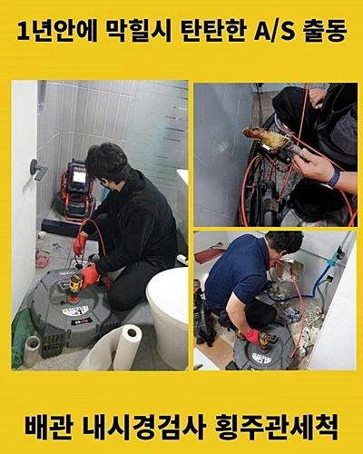
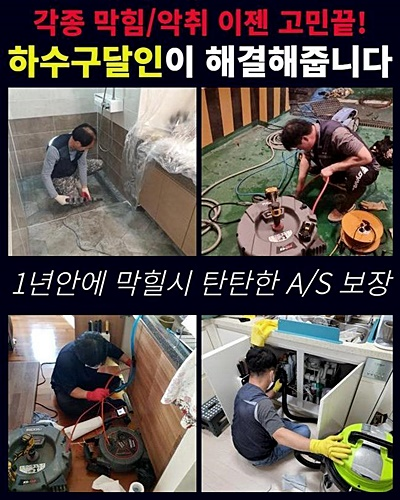
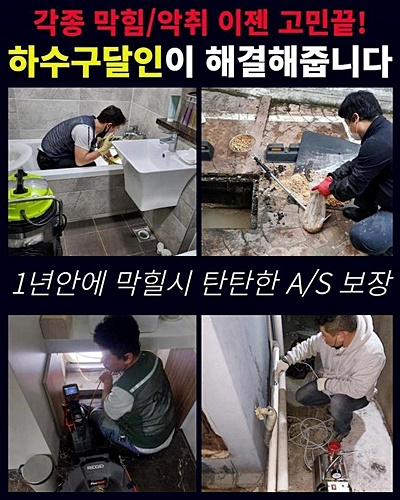
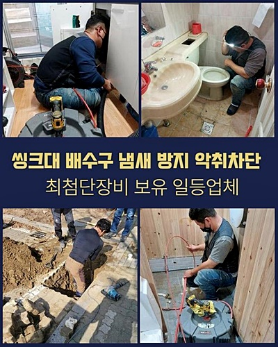
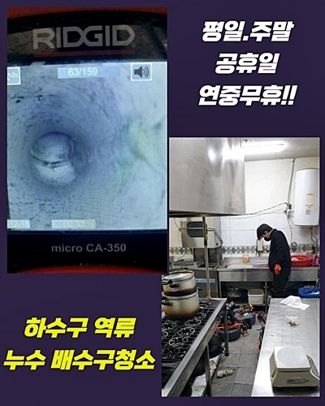

🏠 오산동대변기역류 집수정청소 수리업체
오산시 가수동 배관막힘 전문 시공 후기

📋 작업 개요
- 위치: 오산시 가수동
- 서비스 유형: 배관막힘, 누수수리, 고압세척, 내시경점검
- 작업 일시:
- 업체명: 하수구수사대 (010-5615-2118)
🔍 문제 상황
오산동대변기역류 집수정청소 수리업체
밤 늦은 시간의 고객님의 말씀이 있었더라도 시간에 구애받지 않고 물길을 내어드린다는 소신을 갖고 작업합니다
여러 장치와 기수로 이루어져 있기 때문에 상황에 맞는 공법으로 장애요소를 소거해 드렸습니다
빠른 상담을 요청주셔서 빠른 대처가 이루어졌고 일이 끝난 다음날에 바로 활용하실 수 있게 됐습니다
상황을 들여다보니 아직까지 범람하는 사태까지는 유발되지 않았는데 가벼운 보일러의 장애 탓으로 무거운 문제점까지 생겨날 수 있었던 조건에 처해 있던 곳이었습니다
잘못된 걸 인식하고서 바로 저희를 찾아내게 되어 천운이라고 말씀하셨는데 방치 기간이 길어졌다면 추가적 견적이 나왔을 수 있습니다
약점은 빠짐없이 모조리 바로잡아 주어야만 극단적인 상황까지 치닫는걸 억제할 수 있는 방책이 됩니다
막힘 문제가 발견됐다고 전달주셔서 바로 검사를 해보고 트러블을 개선해 드렸던 작업지였습니다
다른 시설물까지의 침범이 빚어지기 전에 스피드있고 우수한 결과로 이끌 수 있게 성심 성의껏 하수구를 세척해 드리고 있네요!
밤이 깊었는데도 저희에게 도움을 요청해 주셨으니 책임감있는 자세로 아무리 늦은 시간대라고 해도 맞춤형으로 도와드리는 건 필수요소라고 간주합니다!
저희는 늘상 빠른 활동으로 완수를 도모하며 첨단 장치를 동원하고 있기에 무슨 문제점이 있더라도 물길을 낼 수 있어요!
방관한다면 상황은 극복될 수 있어보여도 장기화가 되어버리면 더 심각한 장애로 확산될 위험이 있습니다

🔎 원인 분석
💡 전문가 진단: 정밀 진단 장비를 사용하여 슬러지의 고착 여부를 판명하고 타격/세척 작업을 실시했습니다.
하수구는 워낙 좁기에 물을 받아서 부어버리면 길이 트이진 않을까 싶더라도 생각만큼 단순하지는 않습니다
좁은 하수관을 내려가는 내시경을 활용하여 정확한 오류의 원인을 진단하고 결과에 따른 최적화된 방식을 접목해서 효율적으로 하수구의 문제를 치유해 드리고 있어요
다년간의 업력으로 인한 노하우를 기반으로 철저한 원인규명과 적절한 해결방법을 적용하여 탁월한 변화를 만들어 드립니다
물길이 열리고 난다면 카메라장치를 밑으로 주입시켜서 무슨 종류의 이물질이 있는지 분석하는 단계에 돌입했죠
이 내시경은 좁고 어둑한 배수로의 모든 면을 촬영해 주는 카메라와 라이트 시설의 조합입니다
막힘문제를 야기시킨 이물질의 종류나 결함이 발생된 범주가 어느정도인지를 제대로 알아차릴 수 있게 됩니다
피부 각질이나 머리카락 등이 한몸처럼 조성되어서 여기에 포커싱을 두고 정화했습니다
작업 과정 중에 고객님도 스크린을 보시면서 배관 현상황을 인지하도록 도왔는데 머리카락 뭉치가 이정도로 모여있을 줄은 몰랐다 하셨죠
내부로 내시경을 들여보내서 부족한 측면을 확인해가면서 제대로 임무를 도맡아 드리지 못할 경우에는 같은 문제로 고생하셔야 해요
하수관 속의 막힘은 오래두면 마치 돌덩이처럼 말라버리기 때문에 대응이 더욱 힘들어질 수 있습니다
셀프로 처리하는 것으로는 올바른 통로 복구를 받아볼 수는 없으니 전문적인 조치를 신청하는 게 적절해요
오늘 소개할 장소는 상업 주거가 융합된 곳으로 시간의 흔적이 남은 외관과 다양한 가구가 한곳에 공생하는 형태였어요!

🔧 작업 과정
이런 구조물이라면 하수구의 오래 사용되어 왔을테니 하수구의 고장문제가 생길 위험도가 높습니다
이용한 생활하수가 호쾌하게 흘러가지 못하면 배관 내부에 어떠한 결핍이 탄생하게 될지도 모르니 경계해야 하는 부분입니다
상황전반을 파악하고 적합한 해결책이 도입된다면 건물에 치명적인 손실이 생기는 문제점을 방어할 수 있습니다
하수구에 이물질이 쭉 쌓이다보면 다쳐서 누수 사건까지 터져나오게 되는데 이는 건물의 내구력에 불안정을 초래하여 대규모공사로 연결되기도 해요
작은 물질만 발견됐다해도 처치되지 않고 남아있으면 결착도가 올라가버려서 청결관리하기 난감한 상황으로 발전되는만큼 필히 유의해야 합니다
청소 과정에서 이물질이 있다는 걸 인식한다면 샤프트라는 도구를 통하여 철저하게 청소해 내는 것이 필요하다고 할 수 있어요
내시경을 깊숙이 넣어서 세정한 내부 구조를 다시금 살펴보고 오염원을 모조리 없애주는 과정에 중점을 두어야 합니다
소량의 오염물질이라도 재정비를 진행함으로써 향후에 생겨날 수 있는 상황이 일어나지 않게 합니다
세정에 대한 요구가 있다면 간간히 내부 상황을 체크해가며 파이프 내면을 매끄럽게 유지하는 과정에 중점을 두어야 합니다
이번에 활용한 샤프트는 노폐물을 처리하는 데 고성능의 장치입니다
긴 호스의 끝부분의 노커가 빠른 속도로 돌며 배관 속에 달라붙은 오염물질을 분해해 줍니다
앞서 언급했 듯 오염원은 생각보다 쉽게 배관계로 진출한 뒤 날이갈수록 불순물들끼리 뭉쳐서 문제가 겉잡을 수 없게 변화합니다
하수구막힘을 오래 방치한다면 다수의 인력과 자본이 필요한 상황으로 전락합니다
아무리 견고한 파이프라도 시간이 누적되면 그만큼 낡아버리니 하수구의 갖은 문제점들을 낳을 지도 모릅니다
오래토록 작동해온 배관일 경우 누적된 찌꺼기도 막대하기 때문에 물이 순환되는 매커니즘을 저해할 수 있는데다가 사세를 점차 확장해 나가다가 좁은 관로에 들어차 버립니다
설비에 대해 정기진단을 받고 하수관 세정절차도 필수인데 아무래도 취약해지기 쉬운 만큼 신규 배관에 비해서 보다 신경써서 봐줘야 합니다
하수구 구멍을 통해서 안에 고여있던 더러운 찌꺼기가 역행할 때도 있으니 내부를 깔끔하게 유지하기 위해서도 바쁘시더라도 전문 청소를 자주 해주는 작업이 필요한 겁니다
만일 기다란 관로를 따라 적층되어있는 경우라면 하수구 고압세척 기계를 써서 시원하게 청소해 내는 것이 시간을 아끼는 비법입니다
무작정 압박을 주지 마시고 막힘의 초기단계부터 전문가의 지원을 통해서 명확하게 막힘 사건의 기저를 판단하여 조건에 알맞은 대책을 취하는 과정에 중점을 두어야 합니다
하수도에 관련한 데이터가 결핍되었다면 과격하게 뚫음업무를 단행하기 보다는 전문케어에 들어가기까지 가만히 보존하시는 편이 나아요


✅ 작업 완료
약한 쪽을 건드리기라도 하면 배관이 갈라지거나 동강나는 등의 금액이 다수 투입되어야 하는 리페어가 필요한 사태가 빚어져서 부담스러우실 겁니다
철두철미한 작업 진행과 말끔한 청소 단계를 통해 하수구를 수리해 드리며 문제없이 완수되었는지 철저하게 마무리 검수하고 있습니다
항상 다양한 도구를 현장에 가져가니서 고객님의 문제를 재빨리 고쳐드리고자 전력을 다하여 업무합니다
현황을 보는 촬영기기까지도 다방면으로 준비되었기에 이물질이 어떤 성질이라도 유연하게 복구할 수 있어요
물이 고이고 안내려가는 증세가 생길 시에는 늦은 시간대라도 방문해달라고 말씀만 해주신다면 다년간의 스킬을 발휘해서 하수시설을 정비해 드리겠습니다!



⚠️ 하수구 배관 막힘 예방 및 관리 가이드
- ✅ 머리카락, 비닐, 물티슈 등 물에 분해되지 않는 이물질은 절대 흘려보내지 마세요.
- ✅ 기름기 많은 식기는 설거지 전 키친타올로 먼저 기름때를 닦아내세요.
- ✅ 주기적으로 배수구에 뜨거운 물을 가득 부어주어 유지방 고착을 방지하세요.
- ✅ 작업 후 1년 이내 재발 시 무상 A/S 보증 서비스를 제공합니다.
💡 핵심 정리
- 확실한 장비 작업(내시경 점검 및 샤프트 스케일링)으로 원인을 뿌리 뽑습니다.
- 작업 후 1년 이내에 동일한 부위 재발 시 100% 무상 A/S 서비스를 보장합니다.
- 서울 · 경기 · 인천 전 지역에 24시간 언제든 긴급 출동할 수 있도록 항시 대기 중입니다.
❓ 자주 묻는 질문 (FAQ)
🚨 오산시 가수동 배관막힘 문제로 고민이신가요?
정확한 원인 진단과 확실한 시공으로 재발 없는 해결을 약속드립니다.
24시간 긴급 출동 | 서울 · 경기 · 인천 전지역 | 1년 내 재발 시 무상 A/S